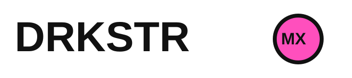

SKU
BOXES
CDMX
SOY MARCA / SELLER
Quiero colocar mis top-SKU cerca de clientes en CDMX y probar entregas más rápidas sin abrir una bodega.
Ir a marcas
FOUNDING PILOT CDMX
Conectamos marcas ecommerce con espacios urbanos listos para operar como nodos de fulfillment. Tus productos más cerca. Tus pedidos más rápidos.
Toma menos de 2 minutos. Revisamos fit, zona y capacidad antes de avanzar.
START HERE
Quiero colocar mis top-SKU cerca de clientes en CDMX y probar entregas más rápidas sin abrir una bodega.
Ir a marcasQuiero saber si mi bodega, local o punto operativo puede funcionar como nodo DRKSTR.
Ir a nodosHOW IT WORKS
DRKSTR coloca SKU de mayor rotación en nodos urbanos conectados por tecnología. Cuando llega un pedido, el nodo prepara el producto y hace el handoff para entregar más rápido desde una ubicación cercana.
La marca envía inventario limitado de top-SKU.
El inventario se ubica cerca de demanda real.
La plataforma enruta pedidos y estados.
Pick, pack, courier handoff y feedback.
THE PROBLEM
Los clientes esperan velocidad, pero abrir bodegas propias, contratar flota y operar fulfillment por zona es caro, lento y difícil de escalar.
FOR BRANDS
Si ya tienes demanda online, DRKSTR te ayuda a probar inventario local en CDMX: top-SKU cerca del cliente, operación ligera y aprendizaje antes de escalar.
FOR SPACES
No buscamos solo metros cuadrados. Buscamos espacios capaces de operar con SLA: recepción, orden, picking, packing y handoff con proceso.
Esto no es ingreso pasivo. Es una operación ligera de fulfillment urbano.
NEXT STEP
Aplicar no es un contrato ni un compromiso. Es un fit check para entender si vale la pena avanzar a una llamada y diseñar una prueba.
APPLICATIONS
Cuéntanos lo mínimo necesario para entender si hay fit. No vendemos promesas: validamos demanda, ubicación, operación y próximos pasos.
Revisamos demanda, zonas, top-SKU, costos actuales y disposición a colocar inventario en un nodo piloto.
Aplicar como marcaValidamos ubicación, metros disponibles, horarios, staff, acceso, internet, CCTV y capacidad real de recepción, picking y packing.
Postular mi espacioNOT READY YET?
¿Todavía no estás listo para aplicar? Déjanos tu email y te enviaremos detalles del piloto CDMX.
PILOT
Estamos seleccionando un grupo limitado de marcas y espacios para construir la primera red piloto en CDMX.
FAQ
No solo. DRKSTR es una red de fulfillment urbano. Conectamos inventario, nodos, preparación de pedidos y handoff de entrega.
Estamos preparando un piloto inicial en CDMX y seleccionando marcas y espacios fundadores. No prometemos una red nacional antes de validar la liquidez local.
Para el piloto recomendamos empezar con inventario limitado y top-SKU. La meta es validar rotación, zonas y operación antes de escalar.
No. La aplicación solo nos ayuda a revisar fit. Si hay match, avanzamos a una llamada y definimos próximos pasos.
DRKSTR conecta inventario, nodos, procesos y handoff de entrega. En el MVP podemos iniciar con flujos simples y partners externos antes de automatizar integraciones profundas.
No exactamente. Un nodo requiere operación, horarios, recepción, picking, packing y cumplimiento de procesos.
La selección depende de la concentración de demanda de marcas y la disponibilidad de espacios operables. La prioridad inicial es CDMX.